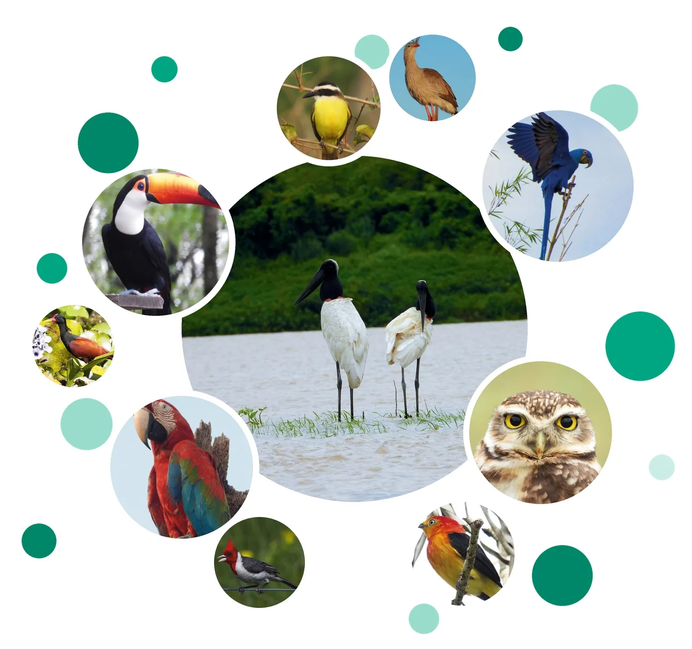

Proteção Integral
Objetivo: preservar a natureza. Só se admite o uso indireto dos recursos naturais.
- Estação Ecológica
- Reserva Biológica a REBIO de Miranda
- Parque Nacional
- Monumento Natural
- Refúgio de Vida Silvestre
Educação ambiental · Miranda/MS · 2026
Unidades de Conservação e aves de Miranda, em sala de aula. A turma do 7º ano conheceu a REBIO Marechal Cândido Mariano Rondon, desenhou a sua ave favorita e montou a galeria no mural da escola.


Fotos: Fundação Neotrópica do Brasil. Guia Fotográfico Aves do Mato Grosso do Sul.
O projeto
O projeto aproxima os estudantes da rede pública municipal das Unidades de Conservação de Miranda e região e da biodiversidade local, com destaque para as aves. Tudo acontece na escola, em uma única linha de ação: palestra em sala de aula, desenho na aula de artes e galeria no mural.
16/11/2026 · em sala
O que são as Unidades de Conservação, a importância e os tipos delas, as unidades de Miranda e região, entre elas a REBIO, a dinâmica “Pode ou Não Pode”, a biodiversidade local e estadual, com destaque para as aves, e a introdução à observação de aves.
17/11/2026 · aula de artes
Cada estudante escolhe uma das aves apresentadas na palestra e faz o desenho dela.
Junto do desenho, o registro de três características da ave, como alimentação, habitat, comportamento, características físicas ou curiosidades.
Depois · no mural da escola
Os desenhos, com o nome da espécie e as três características, vão para o mural da escola, com registro fotográfico e avaliação da experiência.
Escola participante: Escola Municipal Waldemar João de Souza, 7º ano, período matutino. Palestra em 16/11/2026 e aula de artes em 17/11/2026. Fonte: NOVAeng (2026).

Caderno digital Folheie o Caderno dos Guardiões da Biodiversidade O material que a turma usou na palestra e na aula de artes, agora para folhear na tela: vire as páginas, responda as 9 atividades, confira as respostas e marque as aves que você já viu ou ouviu. Abrir o cadernoA REBIO de Miranda
A Reserva Biológica é uma Unidade de Conservação de Proteção Integral. O objetivo dela é preservar os seres vivos e os demais atributos naturais dentro dos seus limites, sem interferência humana direta (BRASIL, 2000, art. 10).
A Fundação Neotrópica do Brasil trabalha para recuperar áreas alteradas da REBIO e forma uma brigada comunitária, com moradores do entorno, para combater incêndios (FUNBIO, [s.d.]).
Guardiões da Biodiversidade cuidam da natureza em todo lugar: na escola, em casa e nas áreas protegidas, que têm regras próprias para proteger a natureza (BRASIL, 2000). Por isso, na palestra e na aula de artes:
Unidades de Conservação
“Espaço territorial e seus recursos ambientais, incluindo as águas jurisdicionais, com características naturais relevantes, legalmente instituído pelo Poder Público, com objetivos de conservação e limites definidos, sob regime especial de administração, ao qual se aplicam garantias adequadas de proteção.”
Lei nº 9.985/2000, art. 2º, I (BRASIL, 2000)
Em outras palavras: é uma área criada oficialmente pelo poder público, com limites definidos, para proteger a natureza que existe nela, e que funciona com regras especiais de uso. No Brasil, as UCs fazem parte do SNUC, o Sistema Nacional de Unidades de Conservação da Natureza.
Objetivo: preservar a natureza. Só se admite o uso indireto dos recursos naturais.
Objetivo: compatibilizar a conservação da natureza com o uso sustentável de parte dos recursos naturais.
Fonte: Lei nº 9.985/2000, arts. 7º, 8º e 14 (BRASIL, 2000).
Área em hectares. Para a RPPN Estância Caiman, só a parte em Miranda.
Fonte dos dados: Cadastro Estadual de Unidades de Conservação, IMASUL (2026). A RPPN Estância Caiman (Dona Aracy) tem área em Miranda e em Aquidauana.
Como observar aves
Observar aves é exercitar a paciência e a atenção. Imagine que, um dia, você vai observar aves no pátio da escola ou perto de casa.
Muitas aves comem frutos e levam sementes para outros lugares, ajudando no crescimento de novas plantas.
Ao visitar flores para se alimentar de néctar, algumas aves carregam pólen de uma flor para outra.
Muitas se alimentam de insetos, pequenos animais e peixes, contribuindo para o equilíbrio do ambiente.
As aves podem ser consumidoras e também servir de alimento para outros animais.
Fonte: Caderno dos Guardiões da Biodiversidade, NOVAeng (2026).
Galeria de aves
Todas estão no Guia Fotográfico Aves do Mato Grosso do Sul, da Fundação Neotrópica do Brasil. Marque Vi ou Ouvi para montar a sua lista. Ela fica salva só neste navegador.
Vulnerável espécie ameaçada de extinção, com alto risco de desaparecer na natureza.
Quase ameaçada ainda não está ameaçada, mas pode ficar se nada mudar.
Categorias da Lista Vermelha da IUCN, consultadas na BirdLife DataZone, e da Lista Nacional de Espécies da Fauna Ameaçadas de Extinção (Portaria MMA nº 1.704/2026). Toque na foto para ver a curiosidade completa e a fonte.
Nenhuma ave encontrada. Tente outro nome.
Curiosidades: WikiAves, a Enciclopédia das Aves do Brasil (wikiaves.com.br), uma página por espécie. Situação de conservação: IUCN, pela BirdLife DataZone (datazone.birdlife.org), consulta em nov. 2026, e Portaria MMA nº 1.704/2026.
Fotos e nomes: Fundação Neotrópica do Brasil. Guia Fotográfico Aves do Mato Grosso do Sul. Créditos fotográficos: Breenda Rezende Siqueira, Fernando de Almeida, Guilherme Dalponti, Jéssica Prestes e Meryelle Oliveira. Uso autorizado para os materiais do projeto.
Jogos
Dois jogos rápidos sobre temas do caderno: a prevenção de incêndios e as aves de Miranda, com as ameaças que elas enfrentam.
Arcade · 60 segundos
Você faz parte da brigada comunitária. Fique de olho nas causas do fogo: toque nelas para evitar o incêndio e toque nos focos para apagar antes que se espalhem.
Pronto para a brigada?
Bitucas de cigarro, queima de lixo e queimadas mal controladas começam incêndios. Evitar o fogo é melhor do que apagar.
Toque em Começar para entrar na brigada.
No caderno: a Parte 3, Fogo e áreas protegidas, mostra que, na REBIO, a Fundação Neotrópica forma uma brigada comunitária contra incêndios (FUNBIO, [s.d.]) e retoma a Campanha “Miranda Sem Fogo” (Ação 03). Segundo a campanha, o período de estiagem, entre julho e outubro, concentra o maior risco de incêndios na região, e entre as causas recorrentes estão as queimadas de manejo mal controladas, o descarte de bitucas de cigarro e a queima de resíduos domésticos.
Voo sem fim · por pontuação
Escolha sua ave e voe entre as árvores. Cada árvore vencida vale 1 ponto, e cada fruto também. Quanto mais longe, mais rápido fica, e chegam o fogo na mata, as redes de captura e o gavião.
Escolha sua ave
Voe entre as árvores, pegue frutos e escape do fogo, das redes de captura e do gavião.
Escolha uma ave e toque em Voar.
No caderno: as aves comem frutos e espalham sementes, ajudando a nascer novas plantas (Parte 2). O fogo destrói o abrigo e o alimento delas (Parte 3), e tirar ave da natureza é proibido: apanhar animal silvestre sem permissão é crime (Lei nº 9.605/1998, art. 29). Curiosidades das aves: WikiAves.
Fontes: Caderno dos Guardiões da Biodiversidade, NOVAeng (2026); Campanha “Miranda Sem Fogo”, Prefeitura de Miranda (2026); BRASIL, Lei nº 9.605/1998.
Atividades
Atividades do Caderno dos Guardiões, com correção na hora. As 9 atividades completas estão no caderno digital.
Leia o que cada UC permite, pela Lei do SNUC, e escolha o grupo.
Sobre o papel das aves na natureza.
Os significados foram resumidos da Lei do SNUC (BRASIL, 2000, art. 2º).
Memória do projeto
Registro da palestra em sala de aula, da aula de artes “Minha ave favorita” e da Galeria dos Guardiões no mural da escola. Rostos de estudantes sem autorização de uso de imagem estão desfocados.
Registro fotográfico do projeto Guardiões da Biodiversidade, Escola Municipal Waldemar João de Souza, Miranda/MS, novembro de 2026. Toque na foto grande para ampliar e deslize as miniaturas para ver as outras.
Base de pesquisa
Os dados do projeto, como foram planejados. Projeto estruturado segundo os critérios do Sistema Estadual de Informação em Educação Ambiental (SisEA/MS), com relatório final a ser cadastrado até 31 de março de 2027.
Aproximar os estudantes da rede pública municipal das Unidades de Conservação de Miranda e região e da biodiversidade local, com destaque para as aves, fortalecendo a compreensão sobre o conceito, o funcionamento e os tipos de Unidades de Conservação e sobre a importância delas para a proteção da biodiversidade e dos recursos hídricos, e o sentimento de pertencimento ao território do município.
| Indicador | Meta prevista |
|---|---|
| Palestras interativas realizadas em sala de aula | 1 |
| Escolas contempladas | 1 (Escola Municipal Waldemar João de Souza) |
| Estudantes atendidos | 1 turma do 7º ano, período matutino (23 estudantes) |
| Atividades realizadas na aula de artes | 1 |
| Galeria dos Guardiões da Biodiversidade montada no mural da escola | 1 |
| Cadernos dos Guardiões da Biodiversidade utilizados | 6 (1 por grupo, 6 grupos) |
| Desenhos produzidos na aula de artes | 23 (1 por estudante) |
| Desenhos expostos no mural da escola | 23 (todos os produzidos) |
| Parcerias formalizadas | 3 |
| Relatório técnico e pedagógico do projeto | 1 |
| Etapa | Quando |
|---|---|
| Primeiro encontro: palestra interativa em sala de aula | 16 de novembro de 2026 |
| Segundo momento: Minha ave favorita, na aula de artes | 17 de novembro de 2026 |
| Produto final: Galeria dos Guardiões da Biodiversidade | depois da aula de artes, no ano-base de 2026 |
| Avaliação e relatório técnico e pedagógico | no ano-base de 2026 |
| Cadastro do relatório final no SisEA/MS (aba Anexos) | até 31 de março de 2027 |
Escola Municipal Waldemar João de Souza, em Miranda/MS, onde se realizam a palestra, a aula de artes e a galeria. A palestra trata das unidades de conservação de Miranda e região, entre elas a REBIO municipal Marechal Cândido Mariano Rondon, criada pelo Decreto nº 2.636, de 12/12/2017, com 868,5 ha (IMASUL, 2026). Público: uma turma do 7º ano do ensino fundamental, com 23 estudantes, e os professores da turma, entre eles o de artes.
Fonte: NOVAeng (2026), Projeto “Guardiões da Biodiversidade”: Unidades de Conservação e Aves em Sala de Aula.
Educação ambiental em Miranda
O Guardiões da Biodiversidade faz parte do conjunto de ações de educação ambiental do município. Cada ação vai ganhar o seu próprio site, que será ligado aqui.
Fonte: fichas técnicas das ações de educação ambiental de Miranda/MS, NOVAeng (2026).
Quem faz

Realização
Órgão gestor da REBIO e proponente do projeto.

Parceria
Apoia o projeto com materiais e registros da REBIO. Autora do guia fotográfico usado no caderno.

Parceria
Conselho Municipal de Meio Ambiente. Acompanha a execução e aprecia o relatório final.
Parceria
Define a escola e a turma, ajusta o calendário, cede a aula da palestra, a aula de artes e o mural, e recolhe os termos de autorização de uso de imagem.

Assessoria técnica
Assessoria técnica à SEMARH na coordenação do projeto, condução da palestra em sala de aula e elaboração do Caderno dos Guardiões.